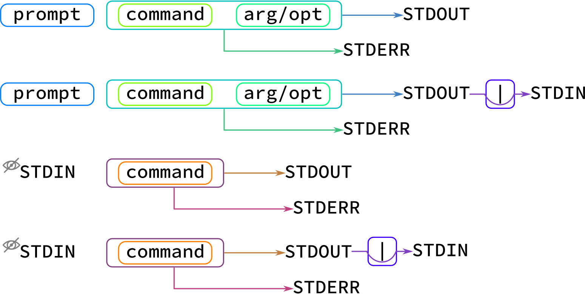

Introducción¶
A pesar de que los datos de secuenciación masiva y de generación de proteomas ha avanzado monumentalmente, los datos finales siguen siendo representados como cadenas de texto, tablas o estructuras de datos simples pero masivos.
Con esto en mente, es importante que aprendamos a seleccionar datos a partir de archivos de relevancia biológica como secuencias, tablas, arreglos, etc.
Tomemos como ejemplo el formato vcf con el que se representan las variantes en humanos y otros organismos
#CHROM POS ID REF ALT QUAL FILTER INFO FORMAT g204
chr1 13417 rs777038595 C CGAGA 324.73 PASS AC=1;AF=0.500;AN=2;BaseQRankSum=0.583;DB;DP=26;ExcessHet=3.0103;FS=0.000;MLEAC=1;MLEAF=0.500;MQ=22.21;MQRankSum=-0.032;QD=12.49;ReadPosRankSum=-2.185;SOR=0.446;VQSLOD=0.698;culprit=ReadPosRankSum GT:AD:DP:GQ:PL 0/1:15,11:26:99:362,0,634
Esta fila corresponde a una variación observada en un individuo en un experimento de secuenciación masiva. Pareciera que es algo que podemos analizar incluso en excel o word, sin embargo, esa es sólo una línea.
En realidad, en los experimentos de secuenciación masiva, se obtienen aproximadamente 50,000 variaciones (líneas) por cada individuo cuando se secuencia un exoma; asímismo, no solamente se secuencia un individuo, se secuencian decenas, centenas, miles incluso millones de individuos, de modo que analizar esa tabla (porque no deja de ser una tabla) en excel, resulta cuando menos, inocente.
Descripción extendida del formato vcf
1: CHROM
chr1
Cromosoma en dónde se ubica la variante
2: POS
13417
Posición de la variante en el cromosoma
3: ID
rs777038595
Identificador de la variante
4: REF
C
Alelo de referencia
5: ALT
CGAGA
Alelo encontrado en la muestra
6: QUAL
324.73
Score de calidad de la variante
7: FILTER
PASS
Flag de calidad de la variante
8:INFO
AC=1;
Número de alelos alternos encontrados
AF=0.500;
Frecuencia alelica (alelo alterno)
AN=2;
Número total de alelos para una variante
BaseQRankSum=0.583
Z-score de la calidad de las bases mapeadas en el alelo alterno vs el alelo de referencia empleando una prueba de Wilcoxon
DB;
Indica si la variante pertenece a una base de datos (dbSNP)
DP=26;
número de lecturas mapeadas en la posición de la variante
ExcessHet=3.0103;
p-value en escala Phred para una prueba exacta de exceso de heterocigosidad
FS=0.000;
P-value ajustado para determinar sesgo hacía una cadena de DNA empleando una prueba exacta de Fisher
MLEAC=1;
Máxima verosimilitud esperada para el número de alelos observados (depende del número de muestras).
MLEAF=0.500;
Máxima verosimilitud esperada para las frecuencias alélicas (depende del número de muestras).
MQ=22.21;
Calidad media de mapeo en la posición de la variante.
MQRankSum=-0.032;
Z-score de la calidad de mapeo las bases alíneadas en el alelo alterno vs el alelo de referencia empleando una prueba de Wilcoxon
QD=12.49;
Confianza del alelo observado (Quality over depth)
ReadPosRankSum=-2.185;
Z-score del sesgo posicional (con respecto de la longitud de la lectura) del alelo alternativo vs el alelo de referencia (depende del número de muestras)
SOR=0.446;
Suma simétrica de la razón de momios del número de lecturas que presentan la variante cerca del final de la lectura, vs las lecturas que la presentan cerca del inicio de la lectura.
VQSLOD=0.698;
Logaritmo de la razón de momios de que la variante sea verdadera vs que sea un falso positivo.
culprit=ReadPosRankSum
El descriptor que presentó la métrica más desfavorable
9:FORMAT
GT
Genotipo
AD
Profundidad de los alelos observados (Ref,Alt)
DP
Profundidad total (número de lecturas
GQ
Calidad del genotipado
PL
Verosimilitud de genotipos (Obs,Nul,Alt)
10:g204
0/1
Heterocigoto
15,11
(C)15 reads + (CGAGA)11 reads
26
99
362,0,634
A través del uso de los siguientes comandos podemos filtrar éstos y otros archivos de relevancia biológica
Para comenzar, vamos a descargar un archivo con el que podamos trabajar
$ cd $HOME
$ wget https://raw.githubusercontent.com/vflorelo/Call-me-by-your-reads/master/snpEff_genes.txt
Y entonces tendremos un archivo llamado snpEff_genes.txt que es un resumen de cuantas variantes se encontraron en cada gen en un experimento de secuenciación de exoma empleando el kit TruSight One expanded
Primero lo revisamos rapidamente con head
$ head snpEff_genes.txt
# The following table is formatted as tab separated values.
#GeneName GeneId TranscriptId BioType variants_impact_HIGH variants_impact_LOW variants_impact_MODERATE variants_impact_MODIFIER variants_effect_3_prime_UTR_variant variants_effect_5_prime_UTR_premature_start_codon_gain_variant variants_effect_5_prime_UTR_variant variants_effect_conservative_inframe_deletion variants_effect_conservative_inframe_insertion variants_effect_disruptive_inframe_deletion variants_effect_disruptive_inframe_insertion variants_effect_downstream_gene_variant variants_effect_frameshift_variant variants_effect_intron_variant variants_effect_missense_variant variants_effect_non_coding_transcript_exon_variant variants_effect_non_coding_transcript_variant variants_effect_splice_acceptor_variant variants_effect_splice_donor_variant variants_effect_splice_region_variant variants_effect_start_lost variants_effect_stop_gained variants_effect_stop_lost variants_effect_stop_retained_variant variants_effect_synonymous_variant variants_effect_upstream_gene_variant
A2M ENSG00000175899 ENST00000318602 protein_coding 1 1 1 0 0 0 0 0 0 0 0 0 0 2 1 0 0 1 0 2 0 0 0 0 0 0
A2M ENSG00000175899 ENST00000462568 retained_intron 0 1 0 1 0 0 0 0 0 0 0 0 0 1 0 0 0 0 0 1 0 0 0 0 0 1
A2M ENSG00000175899 ENST00000472360 retained_intron 0 0 0 2 0 0 0 0 0 0 0 2 0 0 0 0 0 0 0 0 0 0 0 0 0 0
A2M ENSG00000175899 ENST00000543436 processed_transcript 0 1 0 2 0 0 0 0 0 0 0 0 0 1 0 0 0 0 0 1 0 0 0 0 0 2
A2M ENSG00000175899 ENST00000545828 processed_transcript 0 0 0 3 0 0 0 0 0 0 0 0 0 3 0 0 0 0 0 0 0 0 0 0 0 0
A2M ENSG00000175899 ENST00000546069 nonsense_mediated_decay 1 0 0 3 1 0 0 0 0 0 0 1 0 1 0 1 0 1 0 1 0 0 0 0 0 0
A4GALT ENSG00000128274 ENST00000249005 protein_coding 0 2 1 0 0 0 0 0 0 0 0 0 0 0 1 0 0 0 0 0 0 0 0 0 2 0
A4GALT ENSG00000128274 ENST00000381278 protein_coding 0 2 1 0 0 0 0 0 0 0 0 0 0 0 1 0 0 0 0 0 0 0 0 0 2 0
grep¶
G lobally search for a R egular E xpression and P rint matching lines
Como su nombre lo indica, grep busca un patrón (o expresión regular) y nos entrega las líneas que contengan dicho patrón de búsqueda
Opciones
grep
Buscar un patrón en un archivo:
$ grep ABCD3 snpEff_genes.txt ABCD3 ENSG00000117528 ENST00000315713 protein_coding 0 1 0 0 0 0 0 0 0 0 0 0 0 0 0 00 0 0 0 0 0 0 0 1 0 ABCD3 ENSG00000117528 ENST00000370214 protein_coding 0 1 0 0 0 0 0 0 0 0 0 0 0 0 0 00 0 0 0 0 0 0 0 1 0 ABCD3 ENSG00000117528 ENST00000468860 processed_transcript 0 0 0 1 0 0 0 0 0 0 0 0 0 0 01 0 0 0 0 0 0 0 0 0 0 ABCD3 ENSG00000117528 ENST00000647998 protein_coding 0 1 0 0 0 0 0 0 0 0 0 0 0 0 0 00 0 0 0 0 0 0 0 1 0
-wBuscar un patrón en un archivo si y solo si, ocurre como palabra completa$ grep ADCY1 snpEff_genes.txt ADCY1 ENSG00000164742 ENST00000297323 protein_coding 0 1 0 0 0 0 0 0 0 0 0 0 0 0 0 00 0 0 0 0 0 0 0 1 0 ADCY10 ENSG00000143199 ENST00000367848 protein_coding 0 4 2 0 0 0 0 0 0 0 0 0 0 0 2 00 0 0 0 0 0 0 0 4 0 ADCY10 ENSG00000143199 ENST00000367851 protein_coding 0 4 2 0 0 0 0 0 0 0 0 0 0 0 2 00 0 0 0 0 0 0 0 4 0 ADCY10 ENSG00000143199 ENST00000485964 nonsense_mediated_decay 0 0 0 3 1 0 0 0 0 0 0 0 0 0 02 0 0 0 0 0 0 0 0 0 0 ADCY10 ENSG00000143199 ENST00000545172 protein_coding 0 4 2 0 0 0 0 0 0 0 0 0 0 0 2 00 0 0 0 0 0 0 0 4 0 $ grep -w ADCY1 snpEff_genes.txt ADCY1 ENSG00000164742 ENST00000297323 protein_coding 0 1 0 0 0 0 0 0 0 0 0 0 0 0 0 00 0 0 0 0 0 0 0 1 0
-cBuscar un patrón en un archivo pero en vez de entregar las líneas que contienen el patrón, entrega el número de líneas que contiene el patrón$ grep -c BRCA2 snpEff_genes.txt 5
-mBuscar un patrón en un archivo y entregar como maximo m líneas$ grep -m1 BRCA2 snpEff_genes.txt BRCA2 ENSG00000139618 ENST00000380152 protein_coding 0 4 2 0 0 0 0 0 0 0 0 0 0 0 2 00 0 0 0 0 0 0 0 4 0
-nBuscar un patrón en un archivo y mostrar el número de línea en la que ocurre el patrón de búsqueda:$ grep -n BRCA2 snpEff_genes.txt 5884:BRCA2 ENSG00000139618 ENST00000380152 protein_coding 0 4 2 0 0 0 0 0 0 0 0 0 0 0 20 0 0 0 0 0 0 0 0 4 0 5885:BRCA2 ENSG00000139618 ENST00000530893 protein_coding 0 0 0 1 0 0 0 0 0 0 0 1 0 0 00 0 0 0 0 0 0 0 0 0 0 5886:BRCA2 ENSG00000139618 ENST00000544455 protein_coding 0 4 2 0 0 0 0 0 0 0 0 0 0 0 20 0 0 0 0 0 0 0 0 4 0 5887:BRCA2 ENSG00000139618 ENST00000614259 processed_transcript 0 0 0 6 0 0 0 0 0 0 0 0 0 00 6 0 0 0 0 0 0 0 0 0 0 5888:BRCA2 ENSG00000139618 ENST00000665585 nonsense_mediated_decay 0 0 0 3 0 0 0 0 0 0 0 0 0 00 0 0 0 0 0 0 0 0 0 0 3
-vBuscar un patrón en un archivo y muestra las líneas que no contengan el patrón de búsqueda:$ grep -v BRCA2 snpEff_genes.txt <Es mucho output como para ponerlo ;) >Advertencia
grep puede procesar muchos archivos, pero solo un patrón de búsqueda a la vez
Truco
La siguiente construcción es correcta:
$ grep patrón archivo_1 archivo_2 archivo_3Peligro
La siguiente construcción es incorrecta:
$ grep patrón_1 patrón_2 patrón_3 archivo_1En esta ultima construcción, grep interpretará
patrón_2&patrón_3como archivos, no como patrónes de búsquedaTruco
Las opciones de
grepson combinables, de modo que podemos tener:$ grep -wv termino archivo $ grep -wn termino archivo $ grep -wc termino archivoO las que se te ocurran, siempre y cuando tengan sentido ;)
cut¶
Cut es una utilidad para separar columnas de un archivo tabular, como los vcfs o el archivo snpEff_genes.txt
Modos de operación de
cut
Obtener la primera columna de un archivo:
$ cut -f1 snpEff_genes.txt # The following table is formatted as tab separated values. #GeneName A2M A2M A2M A2M A2M A2M A4GALT A4GALTObtener las primeras dos columnas de un archivo:
$ cut -f1,2 snpEff_genes.txt # The following table is formatted as tab separated values. #GeneName GeneId A2M ENSG00000175899 A2M ENSG00000175899 A2M ENSG00000175899 A2M ENSG00000175899 A2M ENSG00000175899 A2M ENSG00000175899 A4GALT ENSG00000128274 A4GALT ENSG00000128274Obtener las primeras cinco columnas de un archivo
Nota
podemos usar:
$ cut -f1,2,3,4,5 snpEff_genes.txtTruco
o podemos usar:
$ cut -f1-5 snpEff_genes.txtObtener las columnas 2 y 3 de un archivo tabular
Nota
podemos usar:
$ cut -f2,3 snpEff_genes.txtTruco
o podemos usar:
$ cut -f1 --complement snpEff_genes.txtObtener todas las columnas de un archivo empezando por la segunda
Truco
Podemos hacerlo pidiendo un intervalo abierto:
$ cut -f2- snpEff_genes.txtO podemos hacerlo excluyendo la columna que nos estorba:
$ cut -f1 --complement snpEff_genes.txtAdvertencia
cutusa por default el tabulador (“\t”) como separador de campo. Qué pasa si mi tabla no está separada por tabuladores?En ese escenario, podemos especificarle a
cutque use caracteres específicos como separadores de campo:$ cat file_1 a1|b1|c1|d1|e1|f1 a2|b2|c2|d2|e2|f2 a3|b3|c3|d3|e3|f3 $ cut -d\| -f2 file_1 b1 b2 b2Truco
Al igual que con
grep, las opciones decutpueden ser combinables para tener un mejor control de lo que nos va a entregar nuestra terminalDe este modo, las siguientes construcciones nos van a dar unicamente las columnas 2 y 6 de un archivo separado por comas:
$ cut -d, -f2,6 $ cut -d, -f1,3-5 --complement
sort¶
Sort puede ordenar un conjunto de líneas empleando algún criterio.
Modos de operacion de
sortOrdenar un conjunto de líneas alfanumericamente
$ sort snpEff_genes.txt A2M ENSG00000175899 ENST00000318602 protein_coding 1 1 1 0 0 0 0 0 0 0 0 0 0 2 1 00 1 0 2 0 0 0 0 0 0 A2M ENSG00000175899 ENST00000462568 retained_intron 0 1 0 1 0 0 0 0 0 0 0 0 0 1 0 00 0 0 1 0 0 0 0 0 1 A2M ENSG00000175899 ENST00000472360 retained_intron 0 0 0 2 0 0 0 0 0 0 0 2 0 0 0 00 0 0 0 0 0 0 0 0 0 A2M ENSG00000175899 ENST00000543436 processed_transcript 0 1 0 2 0 0 0 0 0 0 0 0 0 1 00 0 0 0 1 0 0 0 0 0 2 A2M ENSG00000175899 ENST00000545828 processed_transcript 0 0 0 3 0 0 0 0 0 0 0 0 0 3 00 0 0 0 0 0 0 0 0 0 0 A2M ENSG00000175899 ENST00000546069 nonsense_mediated_decay 1 0 0 3 1 0 0 0 0 0 0 1 0 1 01 0 1 0 1 0 0 0 0 0 0 A4GALT ENSG00000128274 ENST00000249005 protein_coding 0 2 1 0 0 0 0 0 0 0 0 0 0 0 1 00 0 0 0 0 0 0 0 2 0 A4GALT ENSG00000128274 ENST00000381278 protein_coding 0 2 1 0 0 0 0 0 0 0 0 0 0 0 1 00 0 0 0 0 0 0 0 2 0 A4GALT ENSG00000128274 ENST00000401850 protein_coding 0 2 1 0 0 0 0 0 0 0 0 0 0 0 1 00 0 0 0 0 0 0 0 2 0 A4GALT ENSG00000128274 ENST00000465765 processed_transcript 0 0 0 3 0 0 0 0 0 0 0 3 0 0 00 0 0 0 0 0 0 0 0 0 0Advertencia
En cómputo, el orden alfanumérico es algo truculento, 100 va antes que 10, y 10 va antes que 1.
Ordenar un conjunto de líneas numericamente ::
$ sort -n snpEff_genes.txt
Advertencia
En cómputo, el orden numérico es sensible a la presencia de caracteres alfabéticos, por lo que para ordenar líneas adecuadamente se requiere limpiar los datos (que unicamente contengan un tipo de datos por columna o por campo) o de emplear otra estrategia
Ordenar un conjunto de líneas como versionado de software ::
$ sort -V snpEff_genes.txt
Ordenar de forma descendente un conjunto de líneas
$ sort -r snpEff_genes.txt ZSWIM8 ENSG00000214655 ENST00000605216 protein_coding 0 0 0 1 0 0 0 0 0 0 0 1 0 0 0 00 0 0 0 0 0 0 0 0 0 ZSWIM8 ENSG00000214655 ENST00000604754 protein_coding 0 0 0 1 0 0 0 0 0 0 0 1 0 0 0 00 0 0 0 0 0 0 0 0 0 ZSWIM8 ENSG00000214655 ENST00000604729 protein_coding 0 0 0 1 0 0 0 0 0 0 0 1 0 0 0 00 0 0 0 0 0 0 0 0 0 ZSWIM8 ENSG00000214655 ENST00000604524 protein_coding 0 0 0 1 0 0 0 0 0 0 0 1 0 0 0 00 0 0 0 0 0 0 0 0 0 ZSWIM8 ENSG00000214655 ENST00000604165 processed_transcript 0 0 0 1 0 0 0 0 0 0 0 1 0 0 00 0 0 0 0 0 0 0 0 0 0 ZSWIM8 ENSG00000214655 ENST00000603840 processed_transcript 0 0 0 1 0 0 0 0 0 0 0 1 0 0 00 0 0 0 0 0 0 0 0 0 0 ZSWIM8 ENSG00000214655 ENST00000603409 processed_transcript 0 0 0 1 0 0 0 0 0 0 0 1 0 0 00 0 0 0 0 0 0 0 0 0 0 ZSWIM8 ENSG00000214655 ENST00000603309 processed_transcript 0 0 0 1 0 0 0 0 0 0 0 1 0 0 00 0 0 0 0 0 0 0 0 0 0 ZSWIM8 ENSG00000214655 ENST00000603195 processed_transcript 0 0 0 1 0 0 0 0 0 0 0 1 0 0 00 0 0 0 0 0 0 0 0 0 0 ZSWIM8 ENSG00000214655 ENST00000603187 protein_coding 0 0 0 1 0 0 0 0 0 0 0 1 0 0 0 00 0 0 0 0 0 0 0 0 0Ordenar con base en alguna columna específica
$ sort -k2 snpEff_genes.txt C1orf112 ENSG00000000460 ENST00000498289 processed_transcript 0 0 0 5 0 0 0 0 0 0 0 0 0 50 0 0 0 0 0 0 0 0 0 0 0 CFH ENSG00000000971 ENST00000359637 protein_coding 0 1 2 0 0 0 0 0 0 0 0 0 0 0 2 00 0 0 0 0 0 0 0 1 0 CFH ENSG00000000971 ENST00000367429 protein_coding 0 2 2 0 0 0 0 0 0 0 0 0 0 0 2 00 0 0 0 0 0 0 0 2 0 CFH ENSG00000000971 ENST00000466229 retained_intron 0 0 0 4 0 0 0 0 0 0 0 0 0 0 0 30 0 0 0 0 0 0 0 0 1 CFH ENSG00000000971 ENST00000496761 processed_transcript 0 0 0 1 0 0 0 0 0 0 0 0 0 0 01 0 0 0 0 0 0 0 0 0 0 CFH ENSG00000000971 ENST00000630130 protein_coding 0 1 2 0 0 0 0 0 0 0 0 0 0 0 2 00 0 0 0 0 0 0 0 1 0 GCLC ENSG00000001084 ENST00000504525 nonsense_mediated_decay 0 0 0 2 0 0 1 0 0 0 0 0 0 0 01 0 0 0 0 0 0 0 0 0 0 GCLC ENSG00000001084 ENST00000505197 protein_coding 0 0 0 1 0 0 0 0 0 0 0 0 0 1 0 00 0 0 0 0 0 0 0 0 0 GCLC ENSG00000001084 ENST00000513939 protein_coding 0 0 0 1 0 0 0 0 0 0 0 0 0 0 0 00 0 0 0 0 0 0 0 0 1 GCLC ENSG00000001084 ENST00000514004 protein_coding 0 0 0 1 0 0 1 0 0 0 0 0 0 0 0 00 0 0 0 0 0 0 0 0 0Ordenar con opciones múltiples
sortal igual quecutogreppermite combinar opciones, siempre y cuando estas tengan sentido$ sort -n -r -k5 snpEff_genes.txt ZAN ENSG00000146839 ENST00000620596 protein_coding 3 1 12 2 0 0 0 1 0 0 0 0 2 3 11 00 0 1 1 0 0 0 0 1 0 ZAN ENSG00000146839 ENST00000618565 protein_coding 3 2 13 0 0 0 0 1 0 0 0 0 2 2 12 00 0 1 2 0 0 0 0 1 0 ZAN ENSG00000146839 ENST00000613979 protein_coding 3 2 13 0 0 0 0 1 0 0 0 0 2 2 12 00 0 1 2 0 0 0 0 1 0 ZAN ENSG00000146839 ENST00000546292 protein_coding 3 1 12 2 0 0 0 1 0 0 0 0 2 3 11 00 0 1 1 0 0 0 0 1 0 RAI1 ENSG00000108557 ENST00000640861 protein_coding 3 0 2 0 0 0 0 0 0 0 0 0 3 0 2 00 0 0 0 0 0 0 0 0 0 RAI1 ENSG00000108557 ENST00000395774 protein_coding 3 0 2 0 0 0 0 0 0 0 0 0 3 0 2 00 0 0 0 0 0 0 0 0 0 RAI1 ENSG00000108557 ENST00000353383 protein_coding 3 0 2 1 0 0 0 0 0 0 0 1 3 0 2 00 0 0 0 0 0 0 0 0 0 FMO2 ENSG00000094963 ENST00000209929 protein_coding 3 1 6 0 0 0 0 0 1 0 0 0 2 0 5 00 0 0 0 0 1 0 0 1 0 ZMYND15 ENSG00000141497 ENST00000592813 protein_coding 2 1 0 6 0 0 0 0 0 0 0 0 2 0 0 00 0 0 0 0 0 0 0 1 6 ZMYND15 ENSG00000141497 ENST00000573751 protein_coding 2 1 0 3 0 0 0 0 0 0 0 0 2 0 0 00 0 0 0 0 0 0 0 1 3
Redirección: |¶
Una de las principales utilidades de la línea de comandos es la posibilidad de concatenar comandos, es decir, tomar el resultado de un comando y pasarselo al siguiente comando
Para ello debemos considerar que cuando ejecutamos un programa o comando, este nos arroja standard streams, dentro de las cuales tenemos dos muy importantes
STDOUT
La salida estandar (STDOUT) es lo que arroja un comando o un programa a la terminal, contiene unicamente el resultado del proceso que haya realizado un comando o programa
En el siguiente ejemplo, "Hello world!" es la salida estándar del comando echo
$ echo "Hello world!"
STDERR
El error estándar (STDERR) es también lo que arroja un comando o un programa a la terminal pero que contiene diagnósticos internos e información del proceso que haya realizado un comando o programa (no necesariamente el resultado)
En el siguiente ejemplo, "Hola mundo!" es la salida estándar del comando cat, no obstante, al no haber encontrado el archivo mi_otro_archivo.txt, nos manda el mensaje de error (STDERR) cat: mi_archivo.txt No such file or directory
$ cat mi_archivo.txt mi_otro_archivo.txt
cat: mi_otro_archivo.txt No such file or directory
Hola mundo!
Teniendo esto en mente, veremos que los pipes “|” toman el STDOUT y lo convierten en otro standard stream llamado entrada estandar (STDIN)
Importante
De modo natural, nuestros programas y comandos generan STDOUT, los pipes toman este stream y lo pueden pasar a otro comando
Aunque nosotros no vemos el STDIN, el siguiente comando si puede verlo y procesarlo como si se tratara de un archivo
El siguiente comando también generará STDOUT y STDERR y podemos seguir transformando el STDOUT resultante ad infinitum & ad nauseam
En teoria podríamos concatenar tantos comandos como queramos, siempre y cuando la construcción tenga sentido
$ seq 1 3
1
2
3
$ seq 1 3 | grep 2
2
$ seq 1 12 | grep 1
1
10
11
12
$ seq 1 12 | grep 1 | grep 2
12
Redirección: > & >>¶
Ya vimos como dirigir la salida de nuestros comandos y verla en una terminal, pero ahora. Qué pasa si queremos mandar esos resultados a un archivo?
Para ello usaremos los operadores > & >>
Importante
El operador > nos permite mandar la salida estándar de un comando o una serie de comandos a un archivo:
$ ls
$ seq 1 12 | grep 1 | grep 2
12
$ seq 1 12 | grep 1 | grep 2 > archivo_1
$ ls
archivo_1
$ cat archivo_1
12
Peligro
El operador > puede ser muy destructivo si no se emplea adecuadamente:
echo "blablabla" > tesis_final.docx
Importante
El operador >> nos permite agregar la salida estándar de un comando o una serie de comandos a un archivo:
$ seq 1 12 | grep 1 | grep 2 > archivo_1
$ cat archivo_1
12
$ seq 1 12 | grep 1
1
10
11
12
$ seq 1 12 | grep 1 >> archivo_1
$ cat archivo_1
12
1
10
11
12
Avanzado: awk¶
awk por si mismo es un lenguaje de programación, no obstante tiene aplicación en la línea de comandos como un programa de uso general
awksirve para:seleccionar columnas
seleccionar filas
realizar operaciones aritméticas
Importante
Antes de lanzarnos al uso de awk una pequeña introducción
awk opera por bloques delimitados con “{}”:
$ awk '{print $0}'awk puede procesar archivos de forma directa y también puede procesar
STDIN:$ awk '{print $0}' mi_archivo.txt $ seq 1 12 | awk '{print $1}'- Para awk todo puede ser una tabla
- awk puede usar delimitadores de campo tal como lo haria cut
- Las variables FS, IFS & OFS son usadas como delimitadores de campo (field separator)
FS -> field separator
IFS -> input field separator
OFS -> output field separator
Los campos para awk son representados con el signo “$”, de modo que el primer campo es “$1”
- Hay dos campos intrínsecos con notación especial
NR -> number of rows
$0 -> all fields
Tomando en consideración lo anterior, las siguientes construcciones son similares
$ head -n3 archivo_1.csv a,b,c,d e,f,g,h i,j,k,l $ cut -d, -f1,2 archivo_1.csv | head -n3 a,b e,f i,j $ awk 'BEGIN{FS=",";OFS=","}{print $1 OFS $2}' archivo_1.csv | head -n3 a,b e,f i,j
- Estamos listos para usar awk?
Estamos listos para usar awk!
Volvamos a nuestro archivo snpEff_genes.txt, sabiendo que está separado por tabuladores podemos jugar con esta tabla usando awk
Estructura del archivo snpEff.txt
Columna
Descripción
1
GeneName
2
GeneId
3
TranscriptId
4
BioType
5
variants_impact_HIGH
6
variants_impact_LOW
7
variants_impact_MODERATE
8
variants_impact_MODIFIER
9
variants_effect_3_prime_UTR_variant
10
variants_effect_5_prime_UTR_premature_start_codon_gain_variant
11
variants_effect_5_prime_UTR_variant
12
variants_effect_conservative_inframe_deletion
13
variants_effect_conservative_inframe_insertion
14
variants_effect_disruptive_inframe_deletion
15
variants_effect_disruptive_inframe_insertion
16
variants_effect_downstream_gene_variant
17
variants_effect_frameshift_variant
18
variants_effect_intron_variant
19
variants_effect_missense_variant
20
variants_effect_non_coding_transcript_exon_variant
21
variants_effect_non_coding_transcript_variant
22
variants_effect_splice_acceptor_variant
23
variants_effect_splice_donor_variant
24
variants_effect_splice_region_variant
25
variants_effect_start_lost
26
variants_effect_stop_gained
27
variants_effect_stop_lost
28
variants_effect_stop_retained_variant
29
variants_effect_synonymous_variant
30
variants_effect_upstream_gene_variant
Condicionales en awk
Con awk podemos emplear condicionales simples que nos permiten obtener segmentos específicos de un archivo o de un stream
$ awk 'BEGIN{FS="\t"}{if($1=="BRCA1" && $4=="protein_coding" && $5<=10){print $0}}' snpEff_genes.txt
Truco
Desglosemos esta construcción:
awk 'BEGIN{FS="\t"}'Este segmento inicia el proceso de lectura del archivo (
BEGIN) y le indica a awk que el separador de campo es un tabulador “\t”
{if($1=="BRCA1" && $4=="protein_coding" && $5<=10)}Esta condicional (
if(condition){actions}) se lee como:
- Si se cumplen las siguientes condiciones:
$1=="BRCA1"la primera columna (nombre del gen) es BRCA1
&&y además
$4="protein_coding"la cuarta columna (biotipo del transcrito) es codificante
&&y además
$5<=10la quinta columna (número de variantes de alto impacto) es menor o igual a 10
- entonces:
{print $0}muestrame en pantalla todas las columnas
- Y en términos biológicos:
Dame los transcritos del gen BRCA2 que sean codificantes y que además presenten menos de 10 variantes de alto impacto
Advertencia
Es importante diferenciar los signos = & ==
=es un operador de asignación, por lo que no lo podemos usar en condicionales==es un operador de comparación, ideal para usarlo en condicionales
Advertencia
Las condicionales son sumamente útiles en cualquier lenguaje de programación, sin embargo antes de ejecutarlas debemos verificar que tengan sentido
{if($1==1 && $2<=1000000 && $2>=2000000)}
- Esta construcción no tiene sentido, ya que esencialmente le estaremos pidiendo a awk que nos entregue filas en dónde se cumplen las siguientes condiciones:
$1=='1'la primera columna sea igual a 1&&y además$2<='1000000'la segunda columna sea menor o igual a 1,000,000&&y además$2>='2000000'la segunda columna sea mayor o igual a 2,000,000